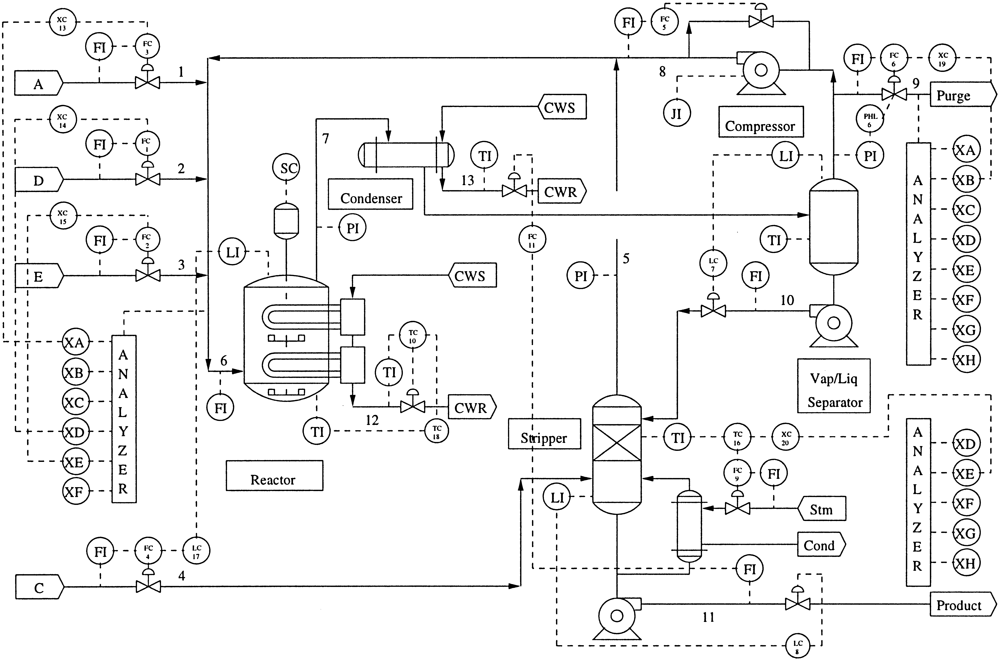

Fault diagnosis#
Dataset#
The Tennessee Eastman Process (TEP) [1], created by Eastman Chemical Company, serves as a crucial benchmark in process control and fault detection, mimicking a real chemical plant’s operations and faults (see Figure ref{fig:process_diagram}). The ICE library uses the extended TEP dataset [cite] which consists of 2800 independent simulations of a chemical process. Each run lasts 100 hours, and sensor data is collected at a frequency of 1 time every 3 minutes. Thus, each run consists of 2000 observations. Once started, the process remains in a normal state for 30 hours, after which it goes to a faulty state. The ratio of the training set to the test set is 80/20.
The dataset contains values of 52 chemical process variables: 41 measured variables and 11 manipulated variables. Each moment in time corresponds to a certain state of the chemical process. Faulty conditions are marked with a label corresponding to the fault number from 1 to 28. All other time points are marked with 0.
Task#
In fault diagnosis [2] within the Tennessee Eastman Process (TEP) dataset, the focus is on monitoring a set of process variables to define the operational state of the chemical process and classify them as normal or as one of 28 faults. The data is a multivariate time series consisting of observations \(X_1, X_2 ... X_n\), where \(X_t \in \mathbb{R^d}\) contains the signal values at time point \(t\). Targets are the sequence \(y_1, y_2 ... y_n\), where \(y_t \in \{0,1\}^m\) determines the type of fault at time point \(t\). Then for a sliding window of width \(k\) the function \(f: \mathbb{R}^{d \times k} \rightarrow [0,1]^m\) must be founded, and
where \(l\) is a loss function. The function \(f\) can be approximated using machine learning methods.
Metrics#
In fault diagnosis, several metrics are commonly used to evaluate the performance of models. These metrics help in understanding how well the model is classifying fault types (true positives) and avoiding false alarms (false positives). The choice of metrics often depends on the specific requirements of the task, such as the importance of correct diagnosis versus the cost of false alarms. Common metrics include:
Accuracy measures the overall correctness of the model, calculated as the number of correct predictions divided by the total number of cases.
Correct Diagnosis Rate (CDR) is the number of correctly predicted faulty conditions devided by the number of detected faulty conditions.
Recall (True Positive Rate, TPR) measures the proportion of actual positives (anomalies) correctly identified as such (true positives). It is particularly important in scenarios where missing an anomaly can have serious consequences.
False Positive Rate (FPR) measures the proportion of negative instances that are incorrectly classified as positive (anomalies). A lower FPR is desirable as it indicates fewer false alarms.
References#
[1] Reinartz, Christopher, Murat Kulahci, and Ole Ravn. “An extended Tennessee Eastman simulation dataset for fault-detection and decision support systems.” Computers & Chemical Engineering 149 (2021): 107281
[2] Abid, Anam, Muhammad Tahir Khan, and Javaid Iqbal. “A review on fault detection and diagnosis techniques: basics and beyond.” Artificial Intelligence Review 54 (2021): 3639-3664.